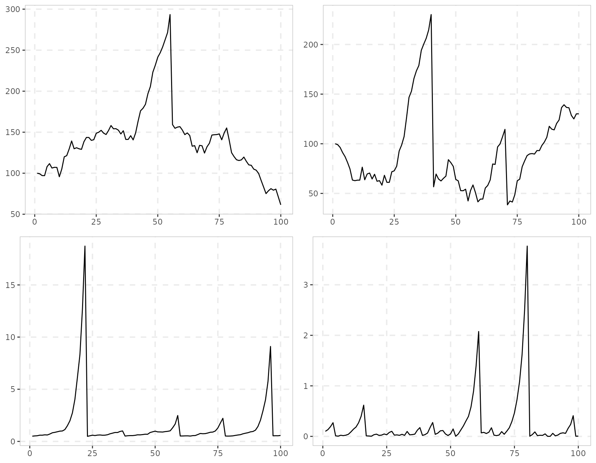

The exuber package has numerous functions which allow the creation of
time series which incorporate rational bubble models. These include
sim_psy1(), which generates a time series with a single
episode of explosive behavior, sim_psy2() which generates a
time series with two episodes of explosive behavior. Two rational bubble
models are also currently included; sim_blan() which
generates a time series containing rational bubbles as proposed by
Blanchard (1979). The final function, sim_evans() generates
a periodically collapsing rational bubble model series. It is the latter
type of bubbles that the GSADF test that PSY attempts to detect.
To test the GSADF test and its associated date-stamping strategy, the
BSADF test, PSY utilize a model of dividends and incorporate an Evans
(1991) type bubble. We replicate that here to show 1) the ability of
exuber to generate realistic simulated time series which incorporate
bubbles and 2) to demonstrate the capabilities of radf() to
detect them.
Let’s start be generating a realistic prices series incorporating an
Evans (1991) type periodically collapsing bubble with the function
sim_evans(). We will use the monthly parameterisation
detailed in PSY (2015a), which corresponds to the empirical values from
the S&P 500. {exuber} contains a function sim_div()
which can be used to generate simulated dividends streams from a random
walk with drift model.
set.seed(125)
# The fundamental value from the Lucas pricing model
pf <- sim_div(400)
# The Evans bubble term
pb <- sim_evans(400)
# the scaling factor for the bubble
kappa <- 20
#
# The simulated price
p <- pf + kappa*pbWe can now plot this data to see what it looks like:

Let’s repeat
library(ggplot2)
library(purrr)
sims <- tibble(
sim_psy1 = sim_psy1(100),
sim_psy2 = sim_psy2(100),
sim_evans = sim_evans(100),
sim_blan = sim_blan(100)
)To plot them altogether we can use theautoplot() method
for “sim” objects. However, autoplot.sim() is for
individual object thus we need some functional programming to plot them
together. We can use the purrr::map() function, which
iterates through every column of the data.frame and stores them into a
list of “ggplot” objects, and then we can arrange with the
ggarrange() function into a 2x2 grid.
